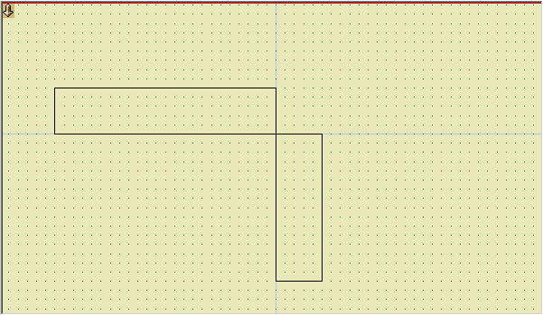
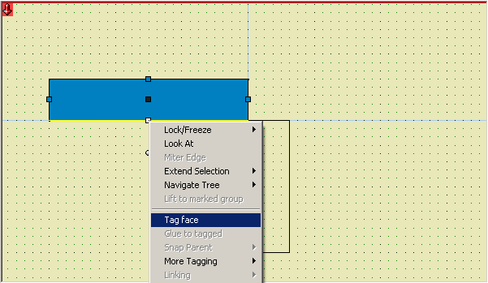
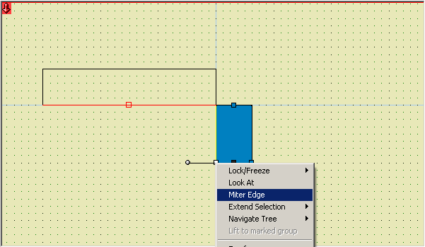
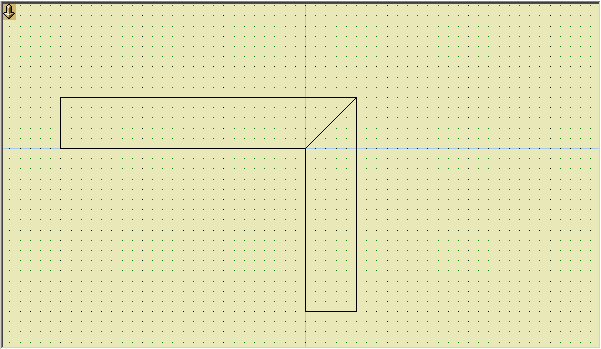

Miter Edge
Updated 13 Dec 2007
- QuArK Information Base
- 2. Map editing
- 2.5. Plug-in descriptions
|
|
Miter Edge
Updated 13 Dec 2007
|
Upper levels: - QuArK Information Base - 2. Map editing - 2.5. Plug-in descriptions |
|
2.5.7. Miter Edge |
[ - - ] |
Miter edge takes two adjoining faces of two different poly's, and closes the gap 'behind' the corner these faces make. This function is useful to create corners, since there's less texture-alignment to do on the outside of the corner, you can caulk the two faces in the corner because they're not visible, and the less faces a map has, the faster it will run ingame. To use this function, tag the first face, and then select Miter Edge on the second face. It's best explained with some pictures. Take two poly's, with two adjoining faces.  Tag one of the faces on the 'inside'-side of the corner to create.  Select the other face, and use Miter Edge.  If everything is OK, you'll now have mitered the faces!  |
|
Copyright (c) 2009, GNU General Public License by The QuArK (Quake Army Knife) Community - http://quark.sourceforge.net/ |
[ - Top - ] |